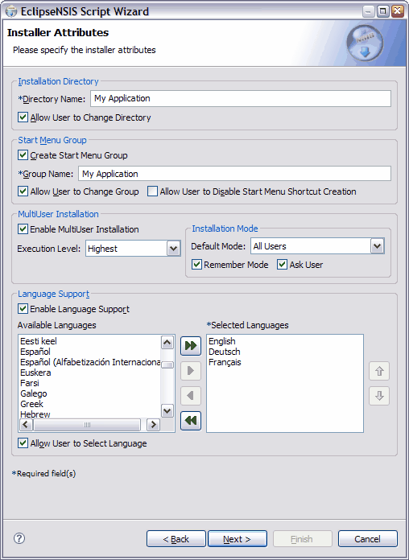

Script Wizard
Installer Attributes
This page is used to specify installation locations and languages.

- Directory Name
- The installation directory for the application. ← Back
- Allow Directory Change
- Option to allow the user to choose the installation directory. If this option is selected, the user is prompted with an installer page to specify the installation location, otherwise the application always installs in the location specified above. ← Back
- Create Start Menu Group
- Option to create a Start Menu group with application related shortcuts. ← Back
- Group Name
- The Start Menu group name for the application. ← Back
- Allow User to Change Group
- Option to allow the user to change the Start Menu group. If this option is selected, the user is prompted with an installer page to specify the Start Menu group name, otherwise the installer always creates the group name specified above. ← Back
- Allow User to Disable Start Menu Group Shortcut Creation
- Option to allow the user to disable the creation of a Start Menu group shortcut. If this option is selected, the user will be prompted with a checkbox labeled "Do not create shortcuts" when specifying the Start Menu group location. ← Back
- Enable Language Support
- Option to create a multilingual installer. If this option is not selected, the installer is created using the default NSIS language (currently U.S. English). ← Back
- Available Languages
- List of languages currently supported by NSIS. ← Back
- Selected Languages
- List of languages selected for the installer. ← Back
- Allow User to Select Language.
- Option to allow user to select the language of the installer. If this option is selected, the user is prompted to select a language for installation, otherwise the installer attempts to automatically determine the language to be used from the user's locale settings. If the user's locale specifies a language not selected for the installer, the first language in the selected languages list is used. ← Back
- Add All
- Add all supported language to the Selected Languages list. ← Back
- Add Highlighted
- Add highlighted language(s) to the Selected Languages list. ← Back
- Remove Highlighted
- Remove highlighted language(s) from the Selected Languages list. ← Back
- Remove All
- Remove all languages from the Selected Languages list. ← Back
- Move Up
- Move highlighted language(s) up in priority. ← Back
- Move Down
- Move highlighted language(s) down in priority. ← Back
Previous | Contents | Next
Copyright © 2004-2006 Sunil Kamath (IcemanK).